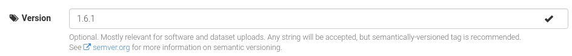
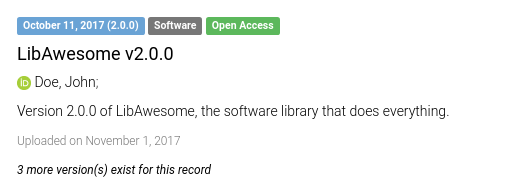
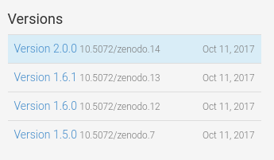
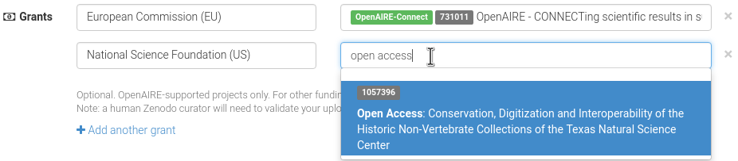
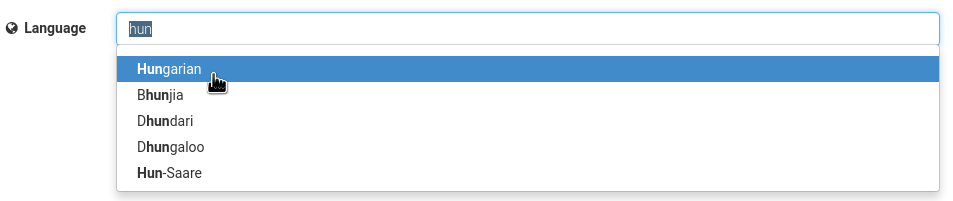
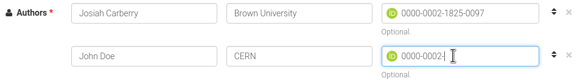
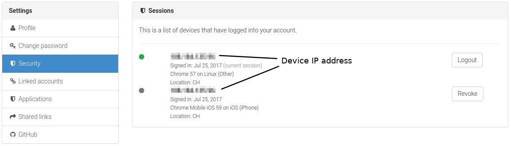

Version field launched!
by
 Alex Ioannidis,
on November 2, 2017
Alex Ioannidis,
on November 2, 2017
As of today, we have extended our metadata schema with the version term, so you can explicitly specify the version of your software, dataset, or any other type of upload.
This allows you to use the version tags such as 1.2.1 or 2017.01 instead of the default version numbers such as 1, 2 or 3.
The addition is part of our efforts to make software a citable, first-class citizen in the world of scientific research.

At the moment the field accepts any kind of text as input, although we strongly suggest that you use semantic versioning for machine-readability.
The version field is directly integrated within our search results and record pages.
 
What about GitHub releases?
This change extends to our GitHub integration, which from now on will automatically populate the version field using the git tag of your GitHub release. You don't have to worry about all GitHub releases that have been already published on Zenodo - they have all been updated with their corresponding release tags.
Does this affect the order of the record versions?
No, the order of the record's versions remains as before, i.e.: record versions are ordered chronologically by the record creation time.
Extended grant support, ORCID and language field.
Today, we are introducing three additions to Zenodo:
- Extended grant support
- Language field
- ORCID for authors
Extended grant support (powered by OpenAIRE)
We are expanding our grants database with over 620,000 grants from 8 new funders such as the National Science Foundation (US) and Wellcome Trust (UK) - all thanks to OpenAIRE's ever growing grants database.

So far we have only been supporting grants from the European Commission (FP7 and Horizon 2020). Today our dataset has grown and contains grants from the following funders:
- National Science Foundation (USA) - 497646 grants
- European Commission (EU) - 39409 grants
- Foundation for Science and Technology (Portugal) - 37277 grants
- National Health and Medical Research Council (Australia) - 24354 grants
- Netherlands Organisation for Scientific Research (The Netherlands) - 24180 grants
- Australian Research Council (Australia) - 23011 grants
- Wellcome Trust (United Kingdom) - 12196 grants
- Ministry of Science and Education (Croatia) - 2120 grants
- Ministry of Education, Science and Technological Development (Serbia) - 777 grants
which means that our grants database grew from nearly 40,000 to over 660,000 grants! We wouldn't have been able to do that if it wasn't for the OpenAIRE team and their hard work in collecting, maintaining and distributing the grants database for the benefit of Open Science!
Language field
Today we are also adding a new language field to our metadata, which allows you to record the primary language of an upload. You can select the language in the upload form simply by starting to type the English name, a 2-letter or a 3-letter ISO 639 code:

The new language field supports all languages defined in ISO 639-3, which in total defines 436 individual and macro-languages. For the full reference of language codes see the Library of Congress ISO 639 Language List.
What if my record contains more than one language?
The field is used to specify the primary language of the resource, hence if, e.g., a thesis is written in Danish and has an English abstract, then the primary language is Danish. Similarly, the primary language of a paper written in English, which is on the topic of Greek linguistics, thus containing a lot of text in Greek, is English.
There are always cases where it is not possible to clearly determine the primary language, for example for a dataset containing the mapping between common Polish and French phrases. In those special cases you can always use ISO 639-3 code mul (Multiple Languages).
ORCID for authors
Last but not least, you can now include an author's ORCID under the Authors section of the metadata on the deposit web interface. 
Google Summer of Code and Zenodo summer update
Google Summer of Code 2017
Zenodo has been taking part in Google Summer of Code 2017 and since June two students, Aman Jain and Xiao Meng, have been working with our team on introducing two exciting features to Zenodo by the end of the summer.
Aman Jain's project will introduce public user profiles on Zenodo that will allow our users to share and show case their uploads on Zenodo.
Xiao Meng's project introduces a new backend files processing module, which will enable us to e.g. extract the metadata from the PDF documents and use that information to improve search or easy pre-filling of upload forms.
New feature: support contact form
Thanks to Aman Jain, one of our GSoC students, you can now contact us more efficiently through a contact form available at zenodo.org/support. This will allow us to organize and resolve our support requests better and faster.
New feature: logged in devices
We recently updated Zenodo to the latest Invenio version which brought along a new feature that allow users to view all devices currently logged into their account. This security feature allow you to remotely log out of devices in case you e.g. forgot to logout of your Zenodo account on a public computer.
You can view all currently logged-in devices by navigating to the Security tab in your account settings.

New feature: status page
On the footer of all Zenodo pages you will now find a "Status" hyperlink (status.zenodo.org), which will show you status of Zenodo and uptime statistics for Zenodo pages and services.